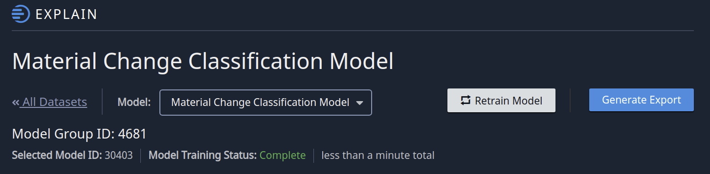

Generating Model Predictions¶
Find Your Selected Model ID¶
The Indico Platform keeps multiple copies of your model and holds them all in a Model Group. So, if you train a classifier to categorize Airline Comments as we show in one of the examples, the classifier will be treated as a Model Group. Each new version that you train gets a new selected model ID. To find the latest selected model ID of a model you trained in the application, just visit the Review page of that model and you’ll see the ID in the upper left corner - see below.
Call ModelGroupPredict¶
With a Selected Model ID (630 in this case), all you need to do is call ModelGroupPredict with a list of samples to predict. Here’s an example:
job = client.call(ModelGroupPredict(
model_id=630,
data=["My flight got canceled", "Did my frequent flyer number expire?"]
))
return client.call(JobStatus(id=job.id, wait=True)).result
Important Performance Note¶
If you want to run predictions on more than one sample then ALWAYS pass a list to ModelGroupPredict.
Loading a new model to run predictions is a costly operation. You are far better off to only do this once
and pass in a list of samples to predict. The list can be just a few or even a few thousand.